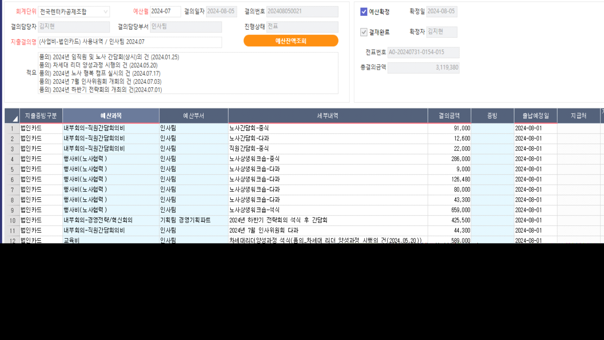
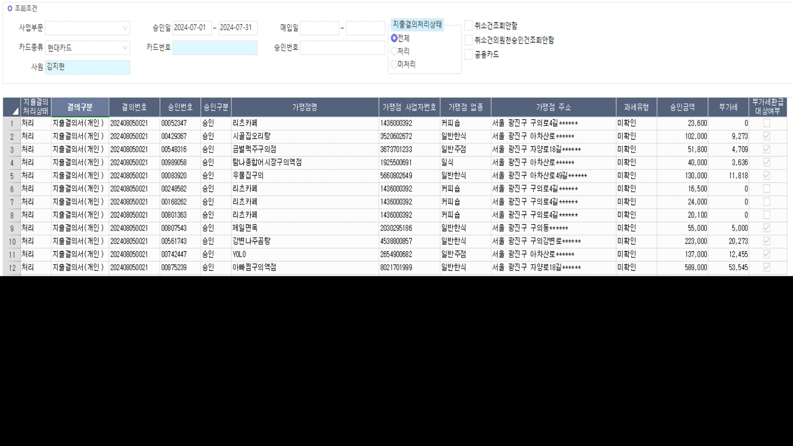
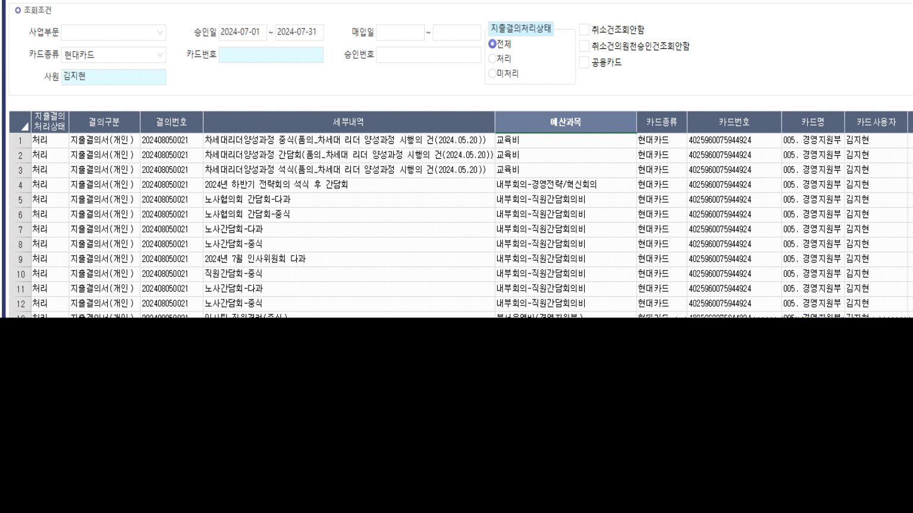

24.08.14 [법인카드 승인내역(보직자)]
안녕하세요. 운영지원팀 권새연입니다.
결의번호 202408050021의 지출결의서에 21건이 등록되어 있지만, [법인카드 승인내역(보직자)] 화면에서는 해당 결의번호에 25건이 조회됩니다.
[법인카드 승인내역(보직자)] 화면에서 '카드종류 : 현대카드', '사원 : 김지현', '승인일 2024-07-01~2024-07-31', '지출결의처리상태 : 전체'로 조회해주시면 되며,
아래 시트 더블클릭 시 [지출결의서] 화면으로 점프됩니다.
[지출결의서]

[법인카드 승인내역(보직자)]

예산과목이 입력되지 않은 상태에서 저장되어 [지출결의서] 화면에는 조회되지 않지만 해당 화면 테이블( krma_TACBgtExpenseD )에서는 조회되는 것으로 보여,
4건 삭제하였으며 삭제 후에도 [법인카드 승인내역(보직자)] 화면에 처리 건으로 조회되며 결의번호가 함께 조회됩니다.

현재 [법인카드 승인내역(보직자)] 화면에 조회되는 4건의 결의번호가 어떤 테이블의 데이터를 가져와 조회되는 것인지 확인 요청드립니다.
추가적으로, [법인카드 승인내역(보직자)] 화면에서 4건이 미처리로 조회될 수 있도록 처리가 가능하시다면 처리 부탁드립니다.
확인 부탁드립니다. 감사합니다.
출처: \<http://61.250.183.6:8100/Page/Open/66261/100101/0/18820244>
SELECT * FROM krma_TACBgtExpense WHERE BgtExpenseSeq = 29279
SELECT * FROM krma_TACBgtExpenseD WHERE BgtExpenseSeq = 29279
SELECT * FROM krma_TACBgtExpenseDFeb WHERE BgtExpenseSeq = 29279
SELECT *
FROM krma_TACBgtExpenseD AS A WITH(NOLOCK)
JOIN krma_VACBgtItem AS B WITH(NOLOCK) ON A.CompanySeq = B.CompanySeq
AND A.BgtSeq = B.BgtSeq
WHERE BgtExpenseSeq = 29279
SELECT *
FROM _TSIAFebCardCfm AS A WITH(NOLOCK)
LEFT OUTER JOIN krma_TACBgtExpenseDFeb AS KA WITH(NOLOCK) ON A.CompanySeq = KA.CompanySeq
AND KA.APPR_DATE = A.APPR_DATE
AND KA.APPR_NO = A.APPR_NO
AND KA.APPR_SEQ = A.APPR_SEQ
AND KA.CANCEL_YN = A.CANCEL_YN
AND KA.CARD_CD = A.CARD_CD
LEFT OUTER JOIN krma_TACBgtExpense AS KB WITH(NOLOCK) ON KA.CompanySeq = KB.CompanySeq AND KA.BgtExpenseSeq = KB.BgtExpenseSeq
LEFT OUTER JOIN krma_TACBgtExpenseD AS KE WITH(NOLOCK) ON KA.CompanySeq = KE.CompanySeq AND KA.BgtExpenseSeq = KE.BgtExpenseSeq AND KA.BgtExpenseSerl = KE.BgtExpenseSerl
--WHERE KA.BgtExpenseSeq = 29279
WHERE KA.COMPANYSEQ IS NULL
SELECT * FROM _TCAPgmSite WHERE SITECaption LIKE '%법인카드 승인%'
SELECT * FROM _TCAPgm WHERE PgmSeq = 30620116